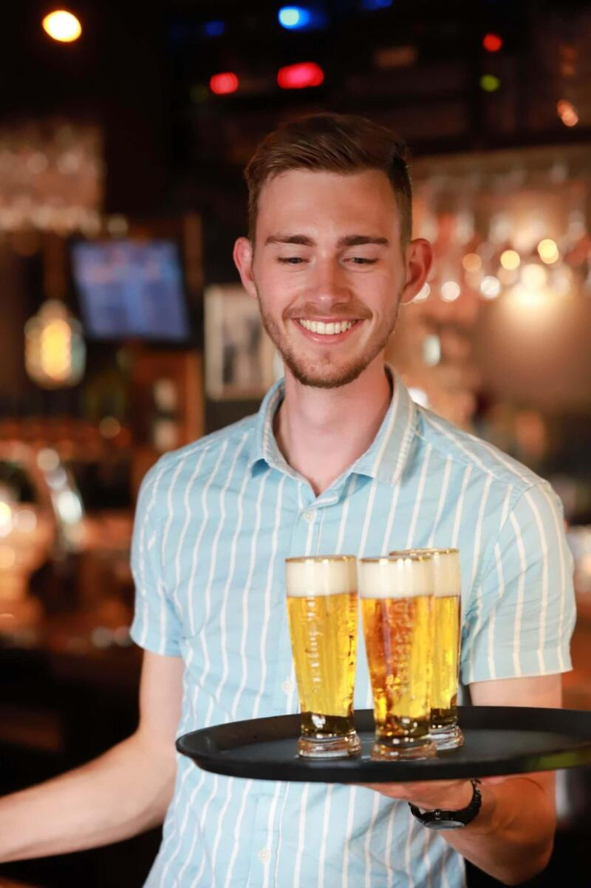
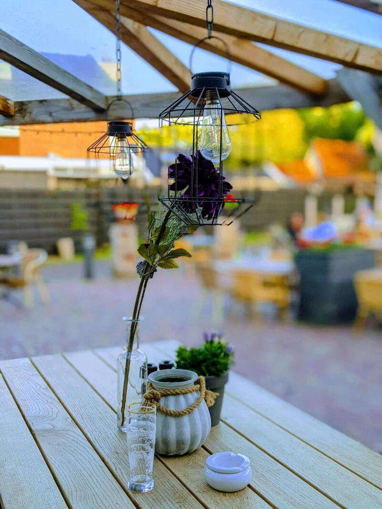
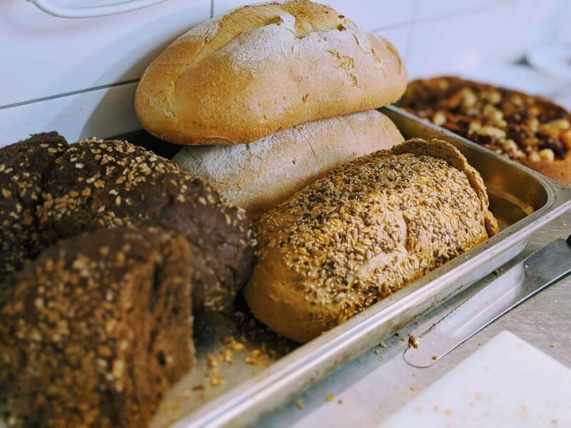
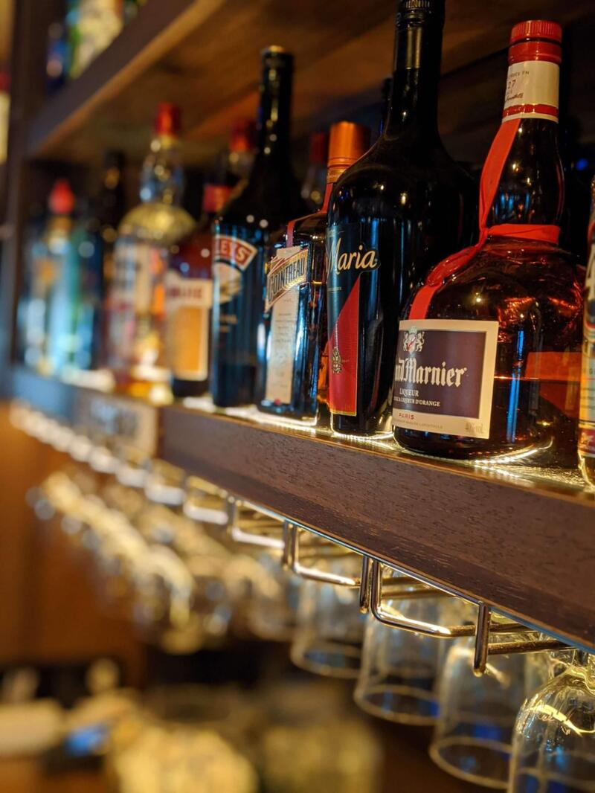
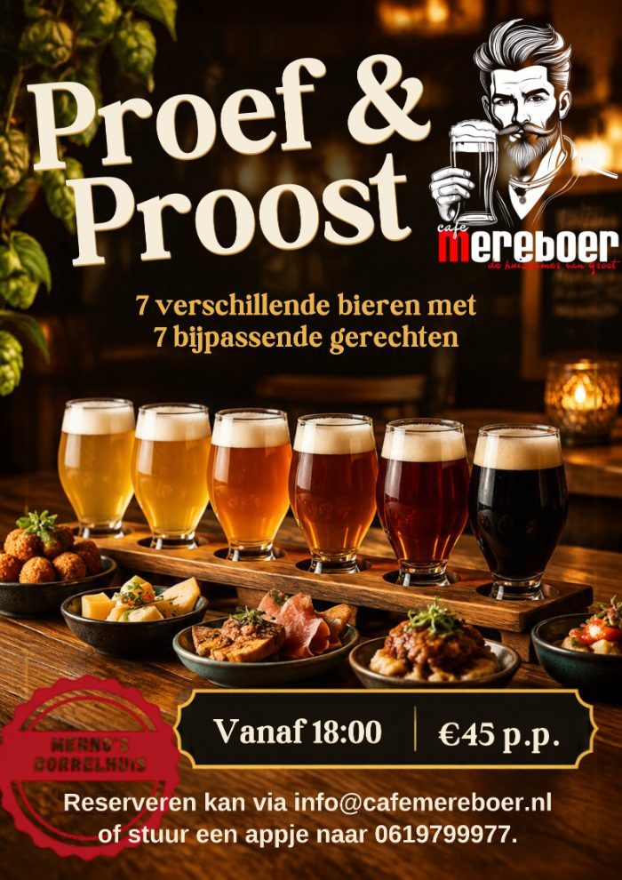
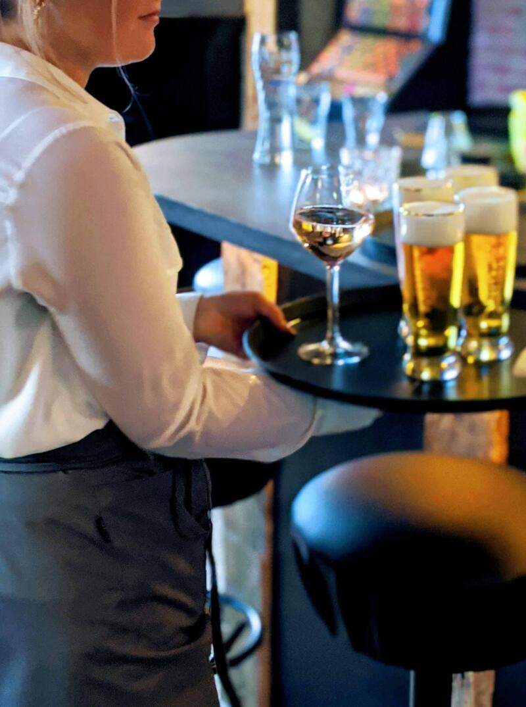

18decvrijdag
Proef & Proost bierproeverij
7 verschillende bieren met 7 bijpassende gerechten.
Reserveren kan via info@cafemereboer.nl of stuur een appje naar 06-19799977.
Heereweg 275, Groet
De huiskamer van Groet
Een stoer en levendig café restaurant nabij de kust. Lekker dineren in het restaurant of gezellig borrelen in het café, met altijd minimaal acht speciaalbieren op de tap.
Midden in het pittoreske dorpje Groet, vlak bij de Schoorlse duinen en de bossen, kun je bij Mereboer lekker eten in het restaurant of gezellig borrelen in het café.
Veel persoonlijke aandacht voor onze gasten, betaalbaar, mooie speciaalbieren en een flinke historie. Soms is er livemuziek en zijn er pubquizzen. En op het verwarmde terras zit je ook als het wat frisser is.




Van Weihenstephaner Hefeweissbier en Texelse Skuumkoppe tot Karmeliet Tripel en Hertog Jan Premium. Proef het aan de bar of op het verwarmde terras.
Bekijk de bieren
18decvrijdag
7 verschillende bieren met 7 bijpassende gerechten.
Reserveren kan via info@cafemereboer.nl of stuur een appje naar 06-19799977.
Soms is er livemuziek en zijn er pubquizzen. Nieuwe evenementen verschijnen hier.
Café Mereboer leent zich bij uitstek voor groepsuitjes, bedrijfsuitjes, bruiloften en meer. Door ons zonovergoten terras, ons gezellige bruine café en ons sfeervolle restaurant kunt u bij ons voor alle feesten & partijen terecht. Vragen? Loop even het café binnen of mail naar info@cafemereboer.nl.
Hiep hiep hoera! Mereboer leent zich bij uitstek voor verjaardagsfeesten met familie en vrienden. Een groot feest zónder rommel en afwas na afloop. Ideaal toch?

Een bedrijfsborrel voor een speciale gelegenheid of gewoon zomaar? Mereboer biedt alle faciliteiten en ruimte voor een geslaagde borrel met de lekkerste drinks & bites.
Perfect voor vergaderingen tot 40 personen: een goed afgesloten ruimte met een beamer, ideaal voor presentaties. Voor prijzen en meer informatie: info@cafemereboer.nl.
Een prachtige trouwlocatie gevonden in Schoorl? Sluit de mooiste dag van je leven af bij Mereboer met een diner of huwelijksfeest. Lees meer over trouwen
Elkaar het jawoord geven op een knusse en gezellige locatie nabij de duinen? Als officiële trouwlocatie onder de rook van Schoorl kunnen wij de gehele trouwdag verzorgen. Alleen de receptie of het huwelijksfeest bij ons houden kan ook.
Mereboer heeft de status officiële trouwlocatie binnen de gemeente Bergen. De huwelijksvoltrekking kan ook bij ons plaatsvinden, in een intieme ceremonie met jullie dierbaren tot maximaal 100 personen. Bij mooi weer openen we de deuren naar ons ruime terras.
Het Witte Kerkje in Groet ligt op slechts 100 meter van Mereboer, prachtig aan de duinen. Daar kunnen wij de catering verzorgen, zoals drankjes of kleine hapjes en broodjes, zodat jullie gasten meteen kunnen proosten. Ook de Ruïnekerk in Bergen (20 minuten rijden) is een unieke plek voor de ceremonie. Daarna staat bij ons alles klaar voor het feest of huwelijksdiner.
We richten de ruimtes in voor een receptie, groot feest of huwelijksdiner, sfeervol aangekleed, met hapjes en snacks tussen het dansen door. Bij het diner is bijna alles mogelijk: van een walking dinner tot een 3-gangen diner of een barbecue op ons zonovergoten terras.
In het voorgesprek nemen we al jullie wensen en het verloop van de dag door, en op basis daarvan maken we een passend voorstel. Hopelijk tot snel bij Mereboer!
Neem contact op
072-509 13 08
info@cafemereboer.nl
Reserveren voor lunch of diner? Bel ons of stuur een mail, dan zetten we een tafel voor je klaar.
| Maandag | 15:00 – 02:00 |
|---|---|
| Dinsdag | Gesloten |
| Woensdag | Gesloten |
| Donderdag | 15:00 – 02:00 |
| Vrijdag | 15:00 – 02:00 |
| Zaterdag | 11:00 – 02:00 |
| Zondag | 11:00 – 02:00 |
Diner tussen 17:00 en 21:00.